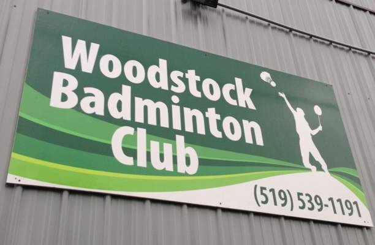
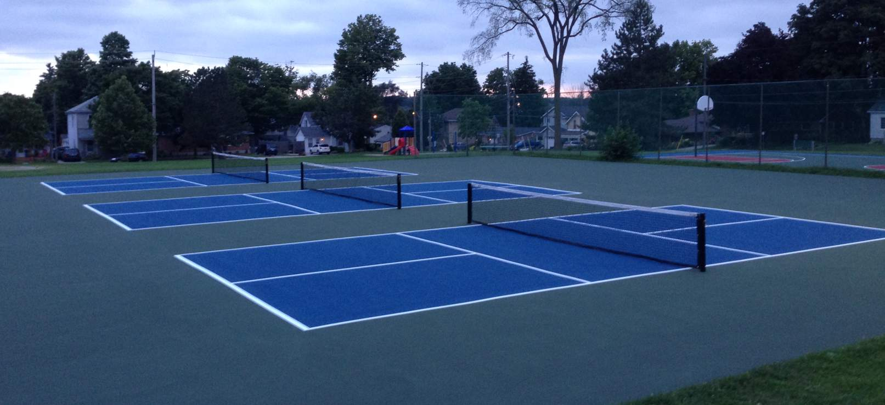
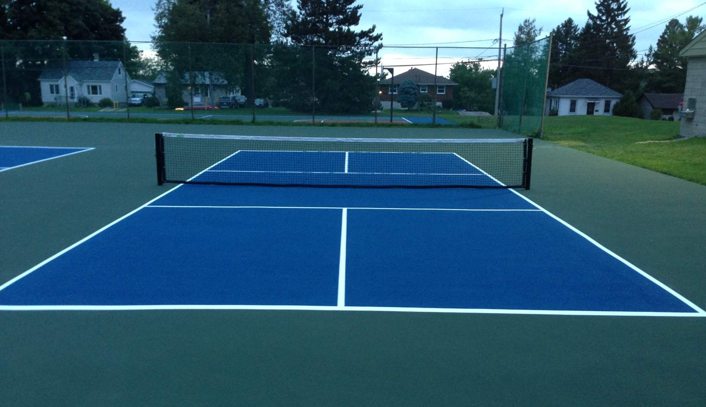

Pickleball is played indoors in Woodstock Ontario at the:
Woodstock Badminton Club
www.woodstockbadmintonclub.org
Phone Number: (519) 539-1191
Address: 310 Hunter Street, Woodstock, Ontario N4S 4E9
Membership Information and Fees are Available on the Woodstock Badminton Club Website
Directions: Click Here

Feel free to email any pickleball questions to:
Email: info@woodstockpickleball.ca
The City of Woodstock offers 3 outdoor courts located at:
176 Park Row at the west end of Woodstock
Directions: Click Here


To Learn More About Pickleball, Click on These Links Below